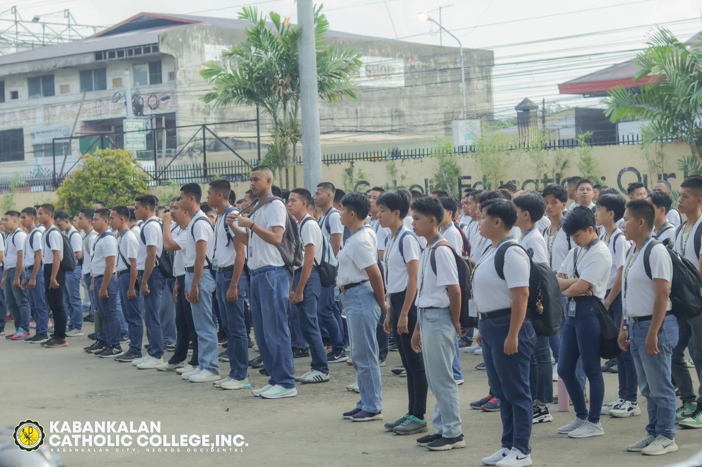

Academic excellence
Rigorous academics that challenge students to think critically and develop a genuine love for learning.
Est. 1927 · Kabankalan City
A Christ-centered learning community where strong academics, growing faith, and service to others belong together.
“Teach Ye All Nations” Matthew 28:19

Founded in 1927, Kabankalan Catholic College has served as the home of Catholic education in Kabankalan City, Negros Occidental—forming capable learners with strong academics, solid values, and a heart for service.
Get to know KCCOur mission
“KCC commits to provide quality and inclusive Catholic education, rooted in the Gospel and driven by innovative research and meaningful community engagements, empowering its members to become effective agents of societal transformation.”Kabankalan Catholic College, Inc.
The KCC way
Rigorous academics that challenge students to think critically and develop a genuine love for learning.
Deepening faith through Catholic tradition, prayer, and a personal relationship with God.
Reaching out to those in need and putting the Gospel into practice through meaningful service.
Forming skilled, knowledgeable people grounded in strong values.
A place for each next step
From early foundations to college, KCC brings learners together in one community shaped by faith, knowledge, and service.
Visit the official KCC website for current program details and offerings.

Learning is a shared journeyBeyond the classroom
KCC's campus life includes academic milestones such as CMAT Pinning and Criminology Reception Rites—moments of learning, faith, friendship, and shared purpose.
See KCC updatesYour next chapter starts here
Explore the next step for you or your family. Visit KCC’s official enrollment portal or reach out to the college for current admissions guidance.